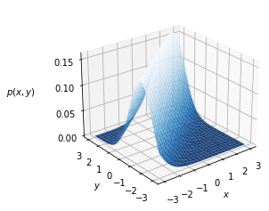
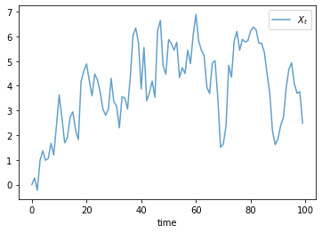

Chapter 8 Code¶
Let us start with some imports.
import numpy as np
import matplotlib.pyplot as plt
from mpl_toolkits.mplot3d.axes3d import Axes3D
from matplotlib import cm
Here is the code for figure 8.1.
a, b = 0.8, 1.0 # parameters
def phi(z):
"Standard normal density."
return (1/np.sqrt(2 * np.pi)) * np.exp(-z**2/2)
def p(x, y):
return phi(y - a * x - b)
xgrid = np.linspace(-3, 3, 50)
ygrid = xgrid
x, y = np.meshgrid(xgrid, ygrid)
fig = plt.figure()
ax = fig.add_subplot(111, projection='3d')
ax.plot_surface(x,
y,
p(x, y),
rstride=2, cstride=2,
cmap=cm.Blues_r,
alpha=0.9,
linewidth=0.25)
ax.set_zticks((0.0, 0.05, 0.1, 0.15))
ax.set_xlabel('$x$')
ax.set_ylabel('$y$')
ax.zaxis.set_rotate_label(False)
ax.set_zlabel('$p(x,y)$', rotation=0, labelpad=20)
azimuth, elevation = -128, 25
ax.view_init(elevation, azimuth)
plt.show()

Here is the code for the time series in figure 8.2.
import numpy as np
import matplotlib.pyplot as plt
ts_length = 100
X = np.zeros(ts_length)
for t in range(ts_length-1):
Z = np.random.randn()
X[t+1] = a * X[t] + b + Z
fig, ax = plt.subplots()
ax.plot(X, alpha=0.7, label='$X_t$')
ax.legend()
ax.set_xlabel("time")
plt.show()

Other figures from this chapter were written using different tools and are omitted.